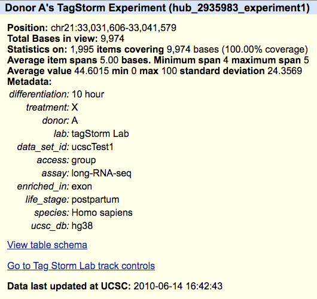
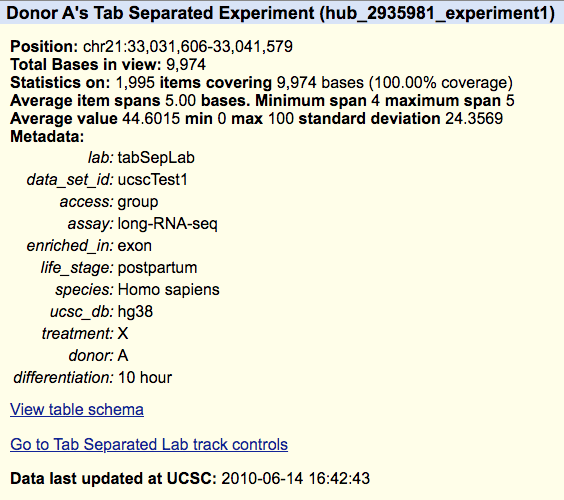

Adding metadata to your tracks about cell lines, experimental protocols, or assays can be accomplished in a number of ways, via the newly supported metaDb or metaTab trackDb fields, or via the older style metadata trackDb field. The metaDb and metaTab fields link external tagStorm or tab-separated metadata files to the data in the hub. The new formats are preferred over the older metadata field, although the metadata lines will continue to be supported for track hubs, but no new features will be added as they will for tagStorm and tabSep files.
The following is an example of a genomes.txt file calling the tagStorm metadata file:
genome hg38 metaDb relativePath/to/tagStorm.txt
and specifying a tab-separated metadata file:
genome hg38 metaTab relativePath/to/tabSep.txt
When using tab-separated or tagStorm metadata, a meta column or line will be needed to specify which metadata information is applied to a track. The meta value should be a unique alphanumeric string.
Currently, in order to add metadata to your tracks, you must specify all of the metadata key-value pairs in each stanza of a track that includes metadata, like the last line of the following example:
track experiment1 shortLabel Donor A longLabel Donor A's Metadata Experiment type bigWig bigDataUrl http://genome.ucsc.edu/goldenPath/help/examples/bigWigExample.bw parent treatmentX on subGroups view=X metadata differentiation="10 hour" treatment=X donor=A lab="List Meta Lab" data_set_id=ucscTest1 access=group assay=long-RNA-seq enriched_in=exon life_stage=postpartum species="Homo sapiens" ucsc_db=hg38
Each track must have a separate metadata field and its own list of key-values, which can become cumbersome when each track in a group all share a common subset of metadata. For instance, if there are 10 tracks in a composite or multiWig, where each subtrack only differs in the "differentiation" tag, it would be more convenient to have a shared set of metadata and then specify the differences for each track. This is the motivation behind the tagStorm format, described below.
You can find an example of a hub using the metadata example above here and you can load the following session to view the hub, https://genome.ucsc.edu/s/PublicSessions/metadata_field.
The tagStorm format is a plain text file similar to a trackDb file that describes all of the tracks in a track hub, in that both are files where the first word in a line is the tag and the rest of the line is the value, and different stanza's are line delimited. TagStorm's are also similar to a spreadsheet, where a tag corresponds to a column and a stanza to an entire row. The tagStorm format is easy for computers to parse, reduce the redundancy of a tab-separated file, and they are human readable. Here is a canonical tagStorm example:
lab tagStorm Lab
data_set_id ucscTest1
access group
assay long-RNA-seq
enriched_in exon
life_stage postpartum
species Homo sapiens
ucsc_db hg38
treatment X
donor A
differentiation 10 hour
meta ucsc1_1
differentiation 1 day
meta ucsc1_4
differentiation 5 days
meta ucsc1_7
treatment Y
donor B
differentiation 10 hour
meta ucsc1_2
differentiation 1 day
meta ucsc1_5
differentiation 5 days
meta ucsc1_8
donor C
differentiation 10 hour
meta ucsc1_3
differentiation 1 day
meta ucsc1_6
differentiation 5 days
meta ucsc1_9
Each stanza, such as "donor B", inherits from any stanzas above it at the right
indentation level, and is a parent to stanzas beneath. In the
example above,
Treatment Y applies to both "donor B" and "donor C". Treatment X only applies to
"donor A" as they are at the same indentation level. There are three differentiation times
that apply to each of the donors and they can be referenced in the trackDb stanza using the
meta line in the
tagStorm file,
i.e., meta ucsc1_1.
The meta ucsc1_1 line would reference the following metadata:
lab tagStorm Lab data_set_id ucscTest1 access group assay long-RNA-seq enriched_in exon life_stage postpartum species Homo sapiens ucsc_db hg38 treatment X donor A differentiation 10 hour
A trackDb stanza using the tagStorm metadata can be seen in the following example:
track experiment1 shortLabel Donor A longLabel Donor A's TagStorm Experiment type bigWig bigDataUrl http://genome.ucsc.edu/goldenPath/help/examples/bigWigExample.bw parent treatmentX on subGroups view=X meta ucsc1_1
You can find the complete example of the hub using the tagStorm metadata here and you can load the following session to view the hub, https://genome.ucssc.edu/s/PublicSessions/tagStorm_metadata. The details page for the trackDb stanza example can be seen below.

Column or tab-separated metadata can be useful to store computer readable information as an array. While this format is very easy for a computer to parse, it can be bit confusing or difficult for humans to read and interpret. As you can see in the example below, many columns become redundant as they repeat the same information on each line.
#lab data_set_id access assay enriched_in life_stage species ucsc_db treatment donor differentiation meta tabSepLab ucscTest1 group long-RNA-seq exon postpartum Homo sapiens hg38 X A 10 hour ucsc1_1 tabSepLab ucscTest1 group long-RNA-seq exon postpartum Homo sapiens hg38 X A 1 day ucsc1_4 tabSepLab ucscTest1 group long-RNA-seq exon postpartum Homo sapiens hg38 X A 5 days ucsc1_7 tabSepLab ucscTest1 group long-RNA-seq exon postpartum Homo sapiens hg38 Y B 10 hour ucsc1_2 tabSepLab ucscTest1 group long-RNA-seq exon postpartum Homo sapiens hg38 Y B 1 day ucsc1_5 tabSepLab ucscTest1 group long-RNA-seq exon postpartum Homo sapiens hg38 Y B 5 days ucsc1_8 tabSepLab ucscTest1 group long-RNA-seq exon postpartum Homo sapiens hg38 Y C 10 hour ucsc1_3 tabSepLab ucscTest1 group long-RNA-seq exon postpartum Homo sapiens hg38 Y C 1 day ucsc1_6 tabSepLab ucscTest1 group long-RNA-seq exon postpartum Homo sapiens hg38 Y C 5 days ucsc1_9
To reference a line in the TSV or CSV file in the trackDb stanza, a
meta column must
contain a unique alpha-numeric string. For example, ucsc1_1 would reference the following
metadata in your track:
#lab data_set_id access assay enriched_in life_stage species ucsc_db treatment donor differentiation meta tabSepLab ucscTest1 group long-RNA-seq exon postpartum Homo sapiens hg38 X A 10 hour ucsc1_1
A trackDb stanza using the tab-separated metadata can be seen in the following example:
track experiment1 shortLabel Donor A longLabel Donor A's Tab Separated Experiment type bigWig bigDataUrl http://genome.ucsc.edu/goldenPath/help/examples/bigWigExample.bw parent treatmentX on subGroups view=X meta ucsc1_1
You can find the complete example of the hub using the tab-separated metadata here and you can load the following session to view the hub, https://genome.ucsc.edu/s/PublicSessions/TabSeparated_metadata. The details page for the trackDb stanza can be seen below.
